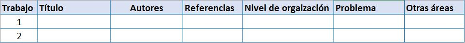

Taller1. Introducción
Taller introductorio a Ecología 1

[
La ecología es una disciplina de las ciencias que ha venido evolucionando de acuerdo a los retos ambientales que se presentan a diferentes escalas, en donde convergen problemáticas que fluctúan en espacio y tiempo. Ya no basta con analizar los elementos bióticos y abióticos que ineractúan en la naturaleza, debido a que la especie humana se convierte en un tensor relevante, que en su dinámica social, interviene de forma directa sobre los diferentes niveles de organización de la naturaleza. Es por ello que el presente taller se orienta hacia una reflexión profunda de cómo podemos intervenir en aspectos como la conservación, recuperación, rehabilitación, restauración, entre otros tecnicismos, de ambientes alterados ya sea por factores naturales (ej. variación climática o gradientes de altura y/o profundidad), eventos naturales de gran escala (ej. cambio climático) o tensores antrópicos (ej. ausencia de una cultura ambiental, de sostenibilidad o de conocimiento de procesos ecológicos).
Objetivo de la actividad

[
Generar competencias en como aplicamos elementos del contexto ecológico, sobre problemáticas ambientales de nuestro entorno, desde una mirada interdisciplinaria y sistémica.
Integrantes del grupo de trabajo

[
Grupos de máximo 4 estudiantes. El primer punto debe ser realizado de forma individual pero todo el taller debe ser ingresado por un estudiante que represente al grupo, colocando los nombres y apellidos de los integrantes, para poderlos identificar. Para más detalles de requerimientos de esta actividad, ver: üìñEntrega y socializaci√≥n del taller
1. Lecturas para la clase.
Requerimiento. Basado en el cap√≠tulo de Rodr√≠guez (2016). Ecolog√≠a (4a. ed.), El cap√≠tulo se llama Introducci√≥n. Ecolog√≠a: del organismo al ecosistema, que se encuentra en el siguiente enlace: üìñENLACE_DEL_LIBRO
Basado en el cap√≠tulo de Smith y Smith (2008). Elementos de Ecolog√≠a (9a. ed.). El Cap√≠tulo se titula Naturaleza de la ecolog√≠a y se encuentra en este enlace de la biblioteca: üìñENLACE_DEL_LIBRO
Mapa conceptual. Basado en las lecturas introductorias y otras referencias bibliográficas revisadas, se requiere elaborar un mapa conceptual en donde se indique el campo de acción de la ecología y otras disciplinas de apoyo, que brindan respuesta a temas ecológicos o ambientales complejos.
Nota. Cada estudiante entregará en la asignación grupal, su mapa conceptual en una página y la valoración de este punto será individual.
2. Trabajos ecológicos.
Requerimiento. Revisar en fuentes confiables y contrastadas experimentalmente (ej. google académico, revistas científicas, libros de la biblioteca, etc.), dos trabajos relacionados con un tema ecológico o ambiental, preferiblemente en el ámbito local o nacional. Diligenciar en la tabla que se relaciona a continuació, los siguientes aspectos:
Titulo y año del trabajo.
Autores del trabajo.
Referencia bibliográfica del trabajo.
Numerar el nivel de organización abordado (ej. poblaciones, comunidades, ambiente, …).
Cómo se resolvió cada problema planteado.
Nota. Este punto será entregado de forma grupal.
Tabla 1. Para diligenciar la información solicitada. En cada fila, se relaciona a la información de cada trabajo.

Elaborar un mapa conceptual o un flujograma, en el que relacionen los dos trabajos analizados.
Además de la ecología, indique otras áreas del conocimiento evaluadas en el trabajo y su importancia para dar respuesta a las problemáticas abordadas.
3. Propuesta de proyecto.
Requerimiento. Elaborar una propuesta de solución ante un problema ambiental o ecológico local (ej. Alguna cuenca de la ciudad, bahías aledañas, sector urbano, parques naturales cercanos, municipio de tu procedencia, etc.), aplicando los conceptos básicos de Ecología vistos en clase.
Discutirán y documentarán los problemas ambientales más importantes de nuestra ciudad o departamento y seleccionarán uno, que no coincida con el de los demás grupos.
Investigar y realizar un listado resumido de las causas y consecuencias de la problemática planteada, así como las posibles soluciones. Pueden apoyarse de la siguiente tabla.
Tabla 2a. Para diligenciar la información solicitada del proyecto en construcción.

- En la siguiente tabla diligenciar los siguientes aspectos del proyecto presentado:
- Temática o problema: ej. Contaminación del río Gaira en Santa Marta.
- Objetivo: Objetivo general que se pretende.
- Actividades: Listar las actividades que pueden dar solución al problema.
- Indicadores: que sean medible, ej: protocolo para el diagnóstico de la contaminación en …
- Responsables: Además de los estudiantes del grupo, que entidades piensan que pueden financiar este proyecto y hacerse responsables.
- Apoyo: entidades que pueden apoyar en las actividades a realizar.
Tabla 2b. Para diligenciar la información solicitada del proyecto en construcción.

Referencias bibliográficas sobre introducción a la ecología
- CAP√çTULO: Introduction to Ecology. De: Molles, M. C., Sher, A. A.(2019). Ecology: concepts & applications. McGraw-Hill. üìñhttps://www-ebooks7-24-com.biblioteca.unimagdalena.edu.co/?il=9960&pg=24

- CAP√çTULO: Conceptos fundamentales en Ecolog√≠a. De: Fernández Gama, D. (2017). Ecolog√≠a. Pearson Educaci√≥n. üìñhttps://www-ebooks7-24-com.biblioteca.unimagdalena.edu.co/?il=7286&pg=21

- CAP√çTULO: Introducci√≥n. Ecolog√≠a del Organismo al ecosistema. De: Rodr√≠guez Mart√≠nez, J. (2016). Ecolog√≠a (4a. ed.). Madrid, Mexico: Difusora Larousse - Ediciones Pirámide. üìñhttps://elibro-net.biblioteca.unimagdalena.edu.co/es/ereader/unimagdalena/49165?page=21

- CAPÍTULO: The Nature of Ecology. De: Smith, T. M., Smith, R. L.(2015). Elements of ecology. Pearson Educación. https://www-ebooks7-24-com.biblioteca.unimagdalena.edu.co/?il=6804&pg=19

- CAPÍTULO: Definiciones, raíces y fundamento. De: Donato Rondón, J. C. (2015). Fundamentos de ecología: un enfoque ecosistémico. Bogotá, Universidad Nacional de Colombia. Recuperado de https://elibro-net.biblioteca.unimagdalena.edu.co/es/ereader/unimagdalena/129861?page=19.

- CAPÍTULO: ECOLOGIA: LA CIENCIA Y SU ORIGEN. De: Luis Fontana, J. (2015). Principios de ecología. Córdoba, Argentina: Editorial Brujas. Recuperado de: https://elibro-net.biblioteca.unimagdalena.edu.co/es/ereader/unimagdalena/78148?page=8.

- CAPÍTULO: Ecología y sus campos de estudio. De: Vázquez Conde, R. (2017). Ecología y medio ambiente. México, D.F, Mexico: Grupo Editorial Patria. Recuperado de https://elibro-net.biblioteca.unimagdalena.edu.co/es/ereader/unimagdalena/40505?page=15.

- CAPÍTULO: Introducción y antecedentes. De: Smith, T. M., Smith, R. L.(2007). Ecología. Pearson Educación. https://www-ebooks7-24-com.biblioteca.unimagdalena.edu.co/?il=3488&pg=24.